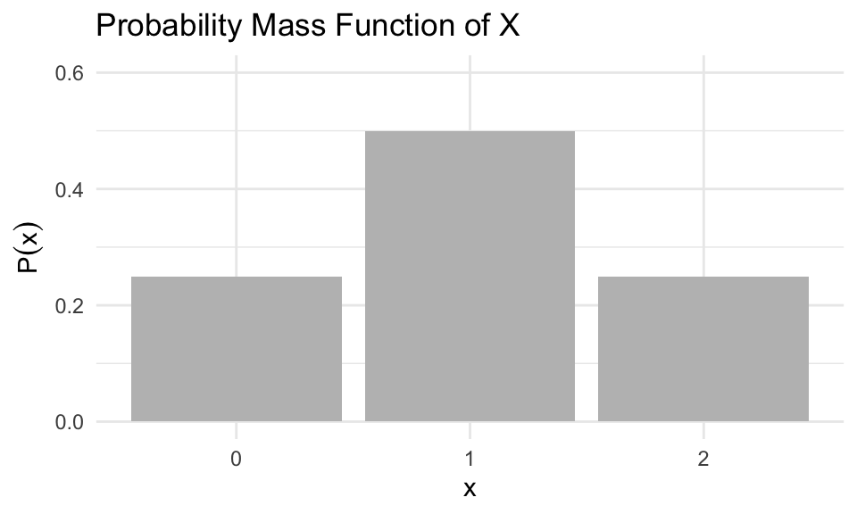
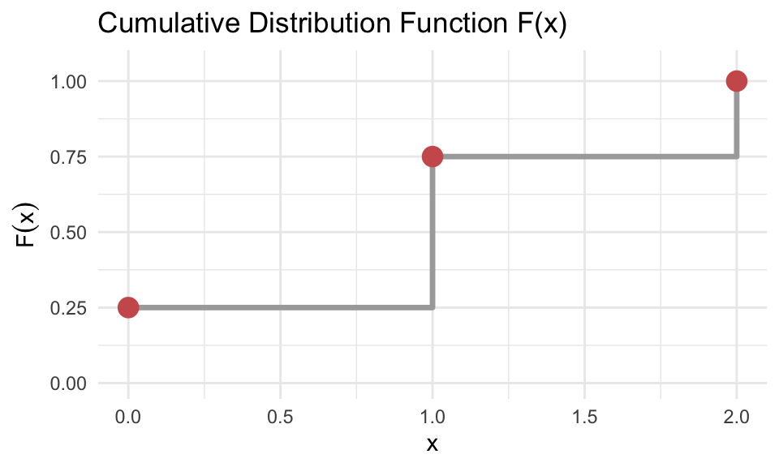
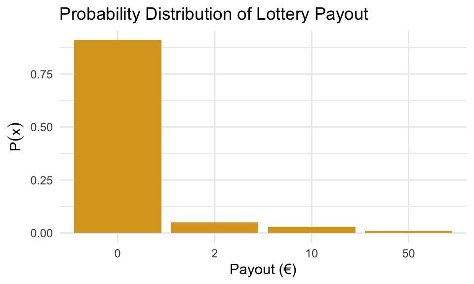

13 Discrete Probability Distributions
A discrete probability distribution describes how the values of a variable are associated with probabilities. It applies when a variable can take on a limited or countable set of values, like 0, 1, 2, and so on, and we know how likely each value is. Note that we use uppercase letter to denote random variables and lowercase letters for the values they take on.
The probability function \(P(x)\) assigns a probability to each possible value \(x\) that the variable can take. These probabilities must all lie between 0 and 1, and together they must sum to exactly 1.
We use the expected value, \(\mathbb{E}(X)\), to summarize the typical or central value of the distribution. It gives us a sense of where the values tend to cluster. Think of it as a kind of weighted average, where more probable outcomes count more heavily in the calculation.
The variance, \(\mathbb{V}(X)\), describes how much the values of the variable differ from this central value. A small variance means most values are close to the expected value, while a large variance means the values are more spread out.
13.1 Probability Mass Function (PMF)
When dealing with discrete random variables, we are interested in how likely it is that the variable takes on specific values. This relationship, the link between possible values and their associated probabilities, is described by the probability distribution of the random variable.
The probability mass function (PMF) is a mathematical function that assigns a probability to each value the variable can take. In other words, the PMF is the mathematical expression of the probability distribution. The distribution is the overall concept; the PMF is the function that specifies the details.
We usually denote the PMF as \(P(x)\), where:
\[ P(x) = P(X = x) \] This gives the probability that the random variable \(X\) equals a specific value \(x\).
For the PMF to describe a valid distribution, it must satisfy two conditions:
Each probability must be between 0 and 1: \[ 0 \leq P(x) \leq 1 \]
The total probability across all values must sum to 1: \[ \sum_x P(x) = 1 \]
If we know \(P(x)\) for all values \(x\) that \(X\) can take, we say we know the probability distribution of \(X\). We can present a probability distribution in several forms: as a table, a bar chart, or through a formula.
Example 12.1: Coin Toss
Suppose we toss a fair coin two times. Let the random variable \(X\) represent the number of heads observed. The sample space consists of four equally likely outcomes:
- Head, Head → \(X = 2\)
- Head, Tail → \(X = 1\)
- Tail, Head → \(X = 1\)
- Tail, Tail → \(X = 0\)
Each of these outcomes has probability 0.25. From this, we can define the probability mass function (PMF) of \(X\) as:
\[ P(x) = \begin{cases} 0.25 & \text{if } x = 0 \\ 0.50 & \text{if } x = 1 \\ 0.25 & \text{if } x = 2 \\ 0 & \text{otherwise} \end{cases} \]
The table below presents a representation of the PMF; showing the values of \(P(x)\) for each value in the support of \(X\):
| Outcomes | \(x\) (Number of heads) | \(P(x)\) |
|---|---|---|
| (Tail, Tail) | 0 | 0.25 |
| (Head, Tail), (Tail, Head) | 1 | 0.50 |
| (Head, Head) | 2 | 0.25 |
We can confirm that this satisfies the requirement:
\[ \sum_x P(x) = 0.25 + 0.5 + 0.25 = 1 \]
This confirms that \(P(x)\) defines a valid probability distribution.
This table is one way of representing the probability distribution of \(X\). Another way to represent it is by using bar plot:
13.2 The Cumulative Distribution Function (CDF)
For a discrete random variable \(X\), we can describe its probability distribution not only using the probability mass function, but also through its cumulative distribution function, denoted \(F(x)\).
The CDF gives the probability that \(X\) takes on a value less than or equal to a given number \(x\):
\[ F(x) = P(X \leq x) \]
This function grows step by step as we move through the possible values of \(X\), accumulating the total probability up to each point.
Example 12.1: Coin Toss (continued)
We continue here with the example abive, where \(X\) is the number of heads in two tosses of a fair coin. The PMF and corresponding CDF values are:
| \(x\) | \(P(x)\) | \(F(x)\) |
|---|---|---|
| 0 | 0.25 | 0.25 |
| 1 | 0.50 | 0.75 |
| 2 | 0.25 | 1.00 |
The last value of \(F(x)\) must always equal 1, since the total probability must sum to 1.

13.3 Expected Value of a Discrete Random Variable
Just like empirical data can be summarized with averages and standard deviations, a discrete probability distribution can also be described using corresponding statistical measures. These include measures of central tendency, such as the expected value, and measures of variability, such as the standard deviation.
The expected value plays the role of a mean or average. But because the possible outcomes may occur with different probabilities, we must take this into account by assigning more weight to more likely outcomes. This means the values are weighted by their associated probabilities.
To find the expected value of a discrete random variable, we do not simply average the outcomes. Instead, we compute a weighted average where the weights are given by the probability mass function.
The expected value of a discrete random variable \(X\) is denoted by \(\mathbb{E}(X)\), where \(\mathbb{E}\) stands for expectation. It is defined as:
\[ \mathbb{E}(X) = \sum_{x} x \cdot P(x) = \mu_X \]
This formula tells us to multiply each value \(x\) by its probability \(P(x)\) and then sum the results over all possible values of \(X\). The result, \(\mathbb{E}(X)\), gives us the value we expect to observe on average in the long run, if we were to randomly select a value of \(X\) according to its probability distribution.
The expected value represents the “center” of the distribution — the point where the values balance, considering how often each one occurs. For example, if a random variable has most of its probability mass near 1, its expected value will be close to 1.
It’s important to note that expected value doesn’t predict what will happen* — it predicts what happens on average. It’s like asking, “What would I get if the universe reran this scenario a million times?”
Example 12.1: Coin Toss (continued)
If you revisit the coin-toss example where \(X\) counts the number of heads in two tosses, you would compute the expected value as:
\[ \mathbb{E}(X) = \sum_{x} x \cdot P(x) = 0 \cdot 0.25 + 1 \cdot 0.5 + 2 \cdot 0.25 = 1 \]
This confirms that we expect to get 1 head on average when tossing a coin twice.
Example 12.2: Lottery - A Risky Business
Let’s say you’re eyeing a lottery with 100 tickets. Each ticket costs 1€, and you’re feeling lucky. The prize setup is:
- One lucky winner gets 50€
- Three people win 10€
- Five folks get 2€
- And… the remaining 91 get absolutely nothing
Let’s define a random variable \(X\) as the payout of a randomly selected ticket.
So what values can \(X\) take?
\[ X \in \{0, 2, 10, 50\} \]
But — and here’s the key — just averaging those values like this:
\[ \frac{0 + 2 + 10 + 50}{4} = 15.5 \]
…makes no sense! That would only be correct if all outcomes were equally likely, which they’re definitely not. Most people walk away with nothing. So we need to weight each value by how often it actually happens.
Let’s build a table to show how many tickets correspond to each prize:
| Payout (€) | Number of tickets | Probability \(P(x)\) |
|---|---|---|
| 0 | 91 | 0.91 |
| 2 | 5 | 0.05 |
| 10 | 3 | 0.03 |
| 50 | 1 | 0.01 |
So now we have a complete probability distribution for \(X\) which is visualized below:

Let’s compute the expected value \(\mathbb{E}(X)\) using the PMF:
\[ \mathbb{E}(X) = \sum_x x \cdot P(x) = 0 \cdot 0.91 + 2 \cdot 0.05 + 10 \cdot 0.03 + 50 \cdot 0.01 = 0.90 \]
So even though one person might win 50€, the average payout per ticket is just 90 cents. That means if you pay 1€ per ticket, you’re losing 10 cents on average.
Most of the time, lottery isn’t just random — it’s rigged (in favor of the organizers)
13.4 Variance and Standard Deviation of a Discrete Random Variable
Just as sample variance measures the average squared deviation from the sample mean, the variance of a random variable measures the average squared deviation from its expected value, weighted by the probability mass function.
Let \(X\) be a discrete random variable with expected value \(\mu_X = \mathbb{E}(X)\). The variance of \(X\) is defined as:
\[ \text{Var}(X) = \mathbb{E}[(X - \mu_X)^2] = \sum_x (x - \mu_X)^2 \cdot P(x) \]
Alternatively, variance can also be calculated using:
\[ \text{Var}(X) = \mathbb{E}(X^2) - (\mathbb{E}(X))^2 \]
The standard deviation is the square root of the variance:
\[ \sigma_X = \sqrt{\text{Var}(X)} \]
These measures provide information about how much variability there is in the possible values of \(X\).
Example 12.1: Coin Toss (continued)
Consider again the random variable \(X =\) number of heads in two tosses of a fair coin. We previously found the expected value:
\[ \mathbb{E}(X) = 1 \]
We now calculate the variance by constructing the following table:
| \(x\) | \(P(x)\) | \((x - \mu_X)^2\) | \((x - \mu_X)^2 \cdot P(x)\) |
|---|---|---|---|
| 0 | 0.25 | 1 | 0.25 |
| 1 | 0.50 | 0 | 0 |
| 2 | 0.25 | 1 | 0.25 |
| 0.50 |
So,
\[ \text{Var}(X) = 0.50 \quad \text{and} \quad \sigma_X = \sqrt{0.50} \approx 0.7071 \]
This tells us that the number of heads in two tosses typically deviates by about 0.71 from the expected value.
Example 12.2: Lottery - A Risky Business
Let \(X\) denote the payout from a randomly selected lottery ticket. From earlier, we know the expected value is:
\[ \mu_X = \mathbb{E}(X) = 0.9 \]
To compute the variance, we first calculate the squared deviations from the mean for each possible payout:
| \(x\) | \(P(x)\) | \((x - \mu_X)^2\) |
|---|---|---|
| 0 | 0.91 | \((0 - 0.9)^2 = 0.81\) |
| 2 | 0.05 | \((2 - 0.9)^2 = 1.21\) |
| 10 | 0.03 | \((10 - 0.9)^2 = 82.81\) |
| 50 | 0.01 | \((50 - 0.9)^2 = 2410.81\) |
Now multiply by probabilities:
\[ \text{Var}(X) = 0.91 \cdot 0.81 + 0.05 \cdot 1.21 + 0.03 \cdot 82.81 + 0.01 \cdot 2410.81 = 27.39 \]
So the standard deviation is:
\[ \sigma_X = \sqrt{27.39} \approx 5.23 \]
So in summary, the expected payout of 0.9€ indicated that on average, each ticket returns 90cents. However, no single ticket actually pays exactly 0.9€. This value is theoretical — it describes the average over many repetitions.
The standard deviation of 5.23€ tells us that the actual payout from a randomly chosen ticket typically deviates from the expected value by about 5€. This large spread reflects the presence of a few large prizes and many losing tickets.
Although the possibility of winning a large amount may seem appealing, the large variance masks the fact that the expected return is less than the ticket price, ensuring profit for the lottery organizers over time.
13.5 Rules for Expectation and Variance
Recall from previous chapter and section Section 12.4 that for any random variable \(X\), and constants \(a\) and \(b\), we always have that the expected value is given by \[ \mathbb{E}(a + bX) = a + b\mathbb{E}(X) \] and the variance by \[ \mathbb{V}(a + bX) = b^2 \mathbb{V}(X). \] Let’s look at an exmaple of this in the discrete case.
Example 12.3: The Project Budget
You’re managing a project. The number of workdays to finish the project, denoted by random variabel \(X\), is a bit uncertain. Its distribution looks like this:
| \(x\) | 10 | 11 | 12 | 13 | 14 |
|---|---|---|---|---|---|
| \(P(x)\) | 0.1 | 0.3 | 0.3 | 0.2 | 0.1 |
You know a few things:
- Fixed cost: €25,000
- Daily cost: €900
- So the total cost denoted by \(Y\) is:
\[ Y = 25000 + 900X \]
Let’s use the rules above to find the expected value and variance of \(Y\).
First we use similar technique as earlier to find
\[ \mathbb{E}(X) = 11.9 \quad \text{and} \quad \mathbb{V}(X) = 1.29 \]
Using the rules of linear transformation we then can find the expected value of \(Y\) \[ \mathbb{E}(Y) = 25000 + 900 \cdot \mathbb{E}(X) = 25000 + 900 \cdot 11.9 = 35710 \]
and the variance of \(Y\) as
\[ \mathbb{V}(Y) = 900^2 \cdot \mathbb{V}(X) = 810000 \cdot 1.29 = 1044900 \]
Finally we find the standarc deviaiton as \[ \sqrt{\mathbb{V}(Y)} = \sqrt{1044900} \approx 1022.20 \]
This gives a total expected project cost of €35,710, with a standard deviation of about €1,022.
13.6 The Bernoulli and Binomial Distribution
In probability theory, many random variables arise in contexts that follow well-known and well-studied distributions. For example, a variable that takes the value 1 when an event occurs and 0 otherwise — such as flipping a coin or checking if a customer buys a product — follows a Bernoulli distribution. When this type of binary trial is repeated independently a fixed number of times, and we count the number of successes, the resulting variable follows a Binomial distribution. These distributions not only help us describe real-world phenomena succinctly but also allow us to use established formulas to compute probabilities, expectations, variances, and more.
A random variable \(X\) is said to follow a Bernoulli distribution if it takes on only two possible values: \(0\) and \(1\). These values typically represent the outcomes of a binary trial — such as failure or success — with probabilities \(1 - p\) and \(p\) respectively. The distribution is written as:
\[ X \sim \text{Bernoulli}(p) \]
This means that \(X = 1\) with probability \(p\), and \(X = 0\) with probability \(1 - p\). The expected value of a Bernoulli variable is given by \(\mathbb{E}(X) = p\), and the variance is \(\mathbb{V}(X) = p(1 - p)\).
A common use of Bernoulli variables is as indicator variables, which simply record whether or not a particular event occurs. For example, suppose \(A\) is an event. Then we define the indicator variable \(X\) as:
\[ X = \begin{cases} 1 & \text{if event } A \text{ occurs} \\ 0 & \text{if event } A \text{ does not occur} \end{cases} \]
In this case, \(X \sim \text{Bernoulli}(p)\), where \(p = P(A)\). This also implies that \(\mathbb{E}(X) = P(A)\). In other words, the expected value of an indicator variable is simply the probability of the event it represents.
As an example, consider rolling a fair six-sided die. Let \(X\) be the indicator variable for the event “rolling a six.” Then:
\[ X = \begin{cases} 1 & \text{if we roll a six} \\ 0 & \text{otherwise} \end{cases} \]
Since the probability of rolling a six is \(p = \frac{1}{6}\), we can say \(X \sim \text{Bernoulli}(1/6)\). The expected value of \(X\) is then \(\mathbb{E}(X) = \frac{1}{6}\), and the variance is:
\[ \mathbb{V}(X) = \frac{1}{6} \left(1 - \frac{1}{6} \right) = \frac{5}{36} \]
This illustrates how Bernoulli variables can model simple binary outcomes and provide useful measures like mean and variability.
Bernoulli variables are also the building blocks of the Binomial distribution. When a Bernoulli trial is repeated independently \(n\) times, and we define a variable \(X\) to count the number of times the event (success) occurs, then \(X\) follows a Binomial distribution. More precisely, if each trial has success probability \(p\), and the trials are independent, then
\[ X \sim \text{Bin}(n, p). \]
In this case, \(X\) can take values \(x = 0, 1, 2, \dots, n\), and the probability mass function is given by the formula
\[ P(X = x) = \binom{n}{x} p^x (1 - p)^{n - x}, \]
where \(\binom{n}{x}\) is the binomial coefficient, which counts the number of ways to choose \(x\) successes from \(n\) trials. The expected value and variance of a binomially distributed random variable are
\[ \mathbb{E}(X) = np \quad \text{and} \quad \mathbb{V}(X) = np(1 - p). \]
Example 12.4: Flipping a Coin 3 Times
As an example, consider tossing a fair coin three times and let \(X\) be the number of heads obtained. Each toss is a Bernoulli trial with \(p = 0.5\), and there are three independent trials, so
\[ X \sim \text{Bin}(3, 0.5). \]
We can compute the probabilities for each possible value of \(X\) using the binomial formula:
\[ P(X = x) = \binom{3}{x}(0.5)^x(1 - 0.5)^{3 - x}. \]
For example, to compute the probability of getting no heads at all, that is \(X = 0\), we use the binomial formula: \[ P(X = 0) = \binom{3}{0}(0.5)^0(1 - 0.5)^3 = 1 \cdot 1 \cdot 0.125 = 0.125. \]
Here, \(\binom{3}{0} = 3\) means the number of ways we can draw exactly 0 heads in 3 tosses and the answer is exactly 1 since there is only one outcome correposndin to this: \(\{(T,T,T)\}\).
For \(X = 2\) however, which corresponds to getting exactly two heads, the calculation is:
\[ P(X = 2) = \binom{3}{2}(0.5)^2(1 - 0.5)^1 = 3 \cdot 0.25 \cdot 0.5 = 0.375. \]
Here, \(\binom{3}{2} = 3\) reflects the number of different ways to get two heads and one tail in three tosses. The specific outcomes are: \(\{(H,H,T), (H,T,H), (T,H,H)\}\). Each of these outcomes has the same probability, and the binomial coefficient counts how many such arrangements contribute to the total.
Doing this for all possible outcomes provides the results in the following table:
| \(x\) | \(P(X = x)\) | \(F(x) = P(X \leq x)\) |
|---|---|---|
| 0 | 0.125 | 0.125 |
| 1 | 0.375 | 0.500 |
| 2 | 0.375 | 0.875 |
| 3 | 0.125 | 1.000 |
We can verify that the total probability sums to 1, as expected. This example illustrates how the binomial distribution models the number of successes in a fixed number of independent trials, and how it extends naturally from the simpler Bernoulli setting.
Example 12.5: 12 Independent Trials with Binary Outcomes
In this example, we consider a sequence of 12 independent trials, where the probability of success on each trial is 0.8. Let \(X\) be the random variable representing the total number of successful trials.
We begin by identifying the distribution of \(X\). Since the trials are independent and each has the same probability of success, \(X\) follows a binomial distribution with parameters \(n = 12\) and \(P = 0.8\). We can write:
\[ X \sim \text{Bin}(12, 0.8) \]
We are asked to compute:
- \(P(X = 10)\)
- \(P(X \leq 10)\)
The first is straightforward to compute using our binomial formula: \[ \begin{split} P(X = 10) = \binom{12}{10}(0.8)^{10}(0.2)^2 & = \frac{12!}{10!(12 - 10)!} (0.8)^{10}(0.2)^2 \\ & = 66 \cdot 0.1074 \cdot 0.04 \approx 66 \cdot 0.004296 \\ & = 0.2835 \end{split} \]
However, for the second task of computing \(P(X \leq 10)\), it can be very tedious to compute the binomial formula 11 times and then add them. Here’s the trick! We consider the number of failures instead. Define \(Y\) as the number of unsuccessful trials. Then \(Y = 12 - X\), and it also follows a binomial distribution, but with with \(p = 0.2\), that is \[ Y \sim \text{Bin}(12, 0.2) \]
So the probability of exactly 10 successes is approximately 0.2835.
However, because \(p = 0.8 > 0.5\), we cannot use the standard binomial tables in the textbook, which only go up to \(P = 0.5\). To get around this, we consider the number of failures instead. Define \(Y\) as the number of unsuccessful trials. Then \(Y = 12 - X\), and it also follows a binomial distribution, but with \(P = 0.2\). So:
\[ Y \sim \text{Bin}(12, 0.2) \]
Now to compute \(P(X \leq 10)\) we see that it corresponds to \(P(Y \geq 2)\), since if \(X \leq 10\), then the number of failures \(Y \geq 2\).
We use the complement: \[ \begin{split} P(X \leq 10) = P(Y \geq 2) & = 1 - P(Y \leq 1) = \\ & = 1 - [P(Y = 0) + P(Y = 1)] \end{split} \]
and use the binomial formula as before: \[ P(Y = 0) = \binom{12}{0}(0.2)^0(0.8)^{12} = 1 \cdot 1 \cdot (0.8)^{12} \approx 0.0687 \]
\[ P(Y = 1) = \binom{12}{1}(0.2)^1(0.8)^{11} = 12 \cdot 0.2 \cdot (0.8)^{11} \approx 0.2062 \] Add these two probabilities \[ P(Y \leq 1) = P(Y = 0) + P(Y = 1) \approx 0.0687 + 0.2062 = 0.2749 \]
and finally, subtract from 1 to get the desired result:
\[ P(Y \geq 2) = 1 - 0.2749 = 0.7251 \]
So, the probability that \(Y\) is greater than or equal to 2 is approximately 0.7251. This is the same probability as \(X\) being less than or equal to 10.
13.7 Exercises
- Let \(X\) be a discrete random variable with the following probability distribution:
| \(x\) | 1 | 2 | 3 | 4 |
|---|---|---|---|---|
| \(P(x)\) | 0.1 | 0.3 | 0.4 | 0.2 |
- Verify that this is a valid probability distribution.
- Compute the expected value \(\mathbb{E}(X)\).
- Compute the variance \(\mathbb{V}(X)\).
Solution
- Validity check We check that the sum of the probabilities is 1:
\[ 0.1 + 0.3 + 0.4 + 0.2 = 1.0 \]
- Expected value
\[ \mathbb{E}(X) = \sum x \cdot P(x) = 1 \cdot 0.1 + 2 \cdot 0.3 + 3 \cdot 0.4 + 4 \cdot 0.2 = 0.1 + 0.6 + 1.2 + 0.8 = 2.7 \]
- Variance
We first compute \(\mathbb{E}(X^2)\): \[ \mathbb{E}(X^2) = 1^2 \cdot 0.1 + 2^2 \cdot 0.3 + 3^2 \cdot 0.4 + 4^2 \cdot 0.2 = 0.1 + 1.2 + 3.6 + 3.2 = 8.1 \]
Then:
\[ \mathbb{V}(X) = \mathbb{E}(X^2) - (\mathbb{E}(X))^2 = 8.1 - (2.7)^2 = 8.1 - 7.29 = 0.81 \]
- Suppose a quality control inspector checks whether products are defective. Each item has a 10% chance of being defective, and tests are independent.
Let \(X\) be a Bernoulli random variable indicating whether a single item is defective. What are the mean and variance of \(X\)?
Let \(Y \sim \text{Bin}(10, 0.1)\) represent the number of defective items in a sample of 10. Compute:
- \(\mathbb{E}(Y)\) and \(\mathbb{V}(Y)\)
- \(P(Y = 0)\)
- \(P(Y \geq 2)\)
Solution
Bernoulli Variable \(X\): \(X \sim \text{Bernoulli}(0.1)\) \[\mathbb{E}(X) = 0.1\]
\[\mathbb{V}(X) = 0.1 \cdot (1 - 0.1) = 0.09\]
Binomial Variable \(Y\): \(Y \sim \text{Bin}(10, 0.1)\)
\(\mathbb{E}(Y) = 10 \cdot 0.1 = 1\)
\(\mathbb{V}(Y) = 10 \cdot 0.1 \cdot 0.9 = 0.9\)
\(P(Y = 0)\)
\[ P(Y = 0) = \binom{10}{0}(0.1)^0(0.9)^{10} = 1 \cdot 1 \cdot (0.9)^{10} \approx 0.3487 \]
- \(P(Y \geq 2)\) We use the complement: \[ P(Y \geq 2) = 1 - P(Y = 0) - P(Y = 1) \] Already have \(P(Y = 0) \approx 0.3487\). Now compute: \[ P(Y = 1) = \binom{10}{1}(0.1)^1(0.9)^9 = 10 \cdot 0.1 \cdot (0.9)^9 \approx 0.3874 \] Then: \[ P(Y \geq 2) = 1 - 0.3487 - 0.3874 = 0.2639 \]